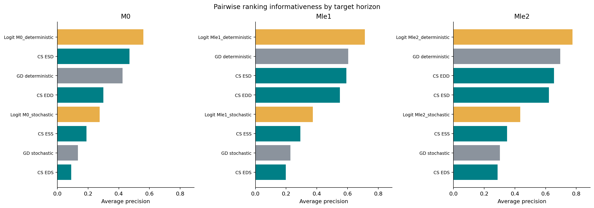
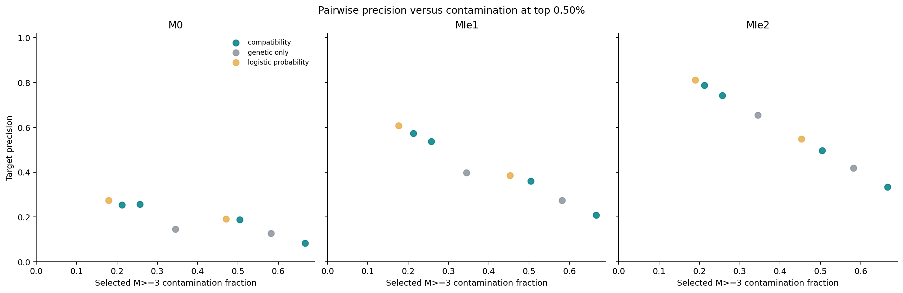
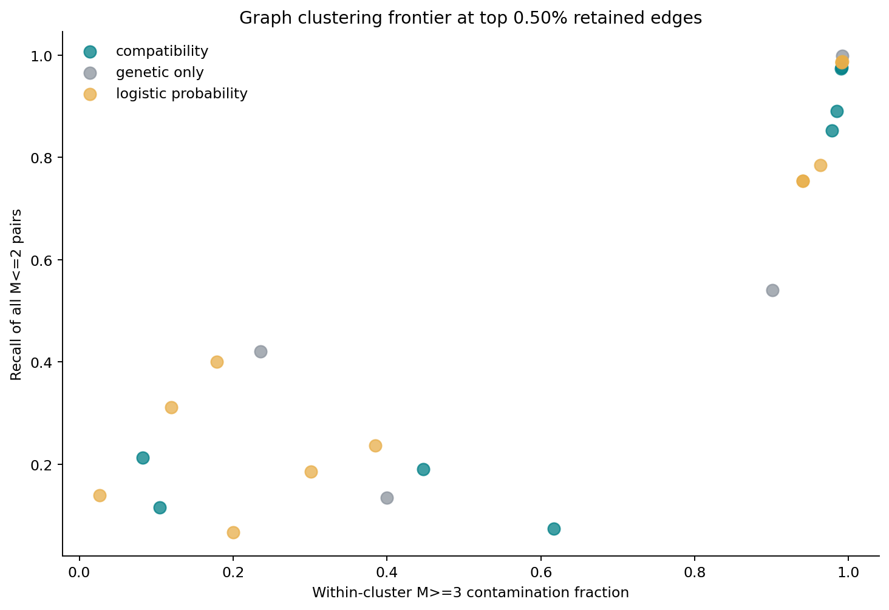
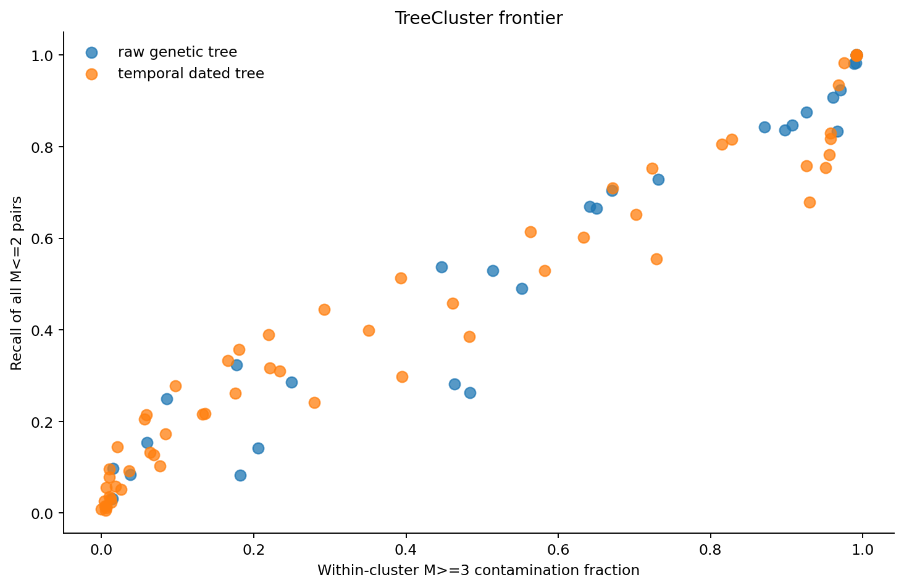

Synthetic Informativeness
Matched baseline · M>=3 contamination analysis
Run And Scope
This fresh analysis evaluates 12,447,555 unordered pairs among 4,990 sampled cases under the matched baseline seed 12345. M>=3 is treated as negative contamination. The positive endpoints are M==0, M<=1, and M<=2. Compatibility scores remain raw summed EpiLink scores, not probabilities.
Pairwise Ranking
Compatibility, genetic-only distance, and logistic probabilities are compared separately for each near-transmission endpoint. Logistic probabilities are trained on a separate date/genome realization on the same transmission tree.
| endpoint |
score_family |
score_name |
data_process |
ap |
target_prevalence |
| Mle2 |
logistic_probability |
logistic_Mle2_deterministic |
deterministic |
0.7749 |
0.008468 |
| Mle1 |
logistic_probability |
logistic_Mle1_deterministic |
deterministic |
0.7126 |
0.004144 |
| Mle2 |
genetic_only |
genetic_only_deterministic |
deterministic |
0.6953 |
0.008468 |
| Mle2 |
compatibility |
compatibility_EDD |
deterministic |
0.6555 |
0.008468 |
| Mle1 |
genetic_only |
genetic_only_deterministic |
deterministic |
0.6044 |
0.004144 |
| Mle1 |
compatibility |
compatibility_ESD |
deterministic |
0.593 |
0.004144 |
| M0 |
logistic_probability |
logistic_M0_deterministic |
deterministic |
0.5595 |
0.001447 |
| M0 |
compatibility |
compatibility_ESD |
deterministic |
0.4693 |
0.001447 |
| M0 |
genetic_only |
genetic_only_deterministic |
deterministic |
0.4254 |
0.001447 |


Operating Points
The table shows the 70% target-recall operating point where available. M>=3 contamination is the selected fraction with at least three total intermediates.
| endpoint |
score_name |
precision |
recall |
selected_pairs |
Mge3_contamination_fraction |
median_M_connected |
p90_M_connected |
| M0 |
logistic_M0_deterministic |
0.4859 |
0.7115 |
26372 |
0.07663 |
1 |
2 |
| M0 |
compatibility_ESD |
0.4637 |
0.7019 |
27262 |
0.1076 |
1 |
3 |
| M0 |
genetic_only_deterministic |
0.2961 |
0.9428 |
57333 |
0.1682 |
1 |
3 |
| M0 |
compatibility_EDD |
0.2939 |
0.7267 |
44533 |
0.1893 |
1 |
3 |
| M0 |
logistic_M0_stochastic |
0.1828 |
0.7078 |
69734 |
0.4855 |
2 |
7 |
| M0 |
compatibility_ESS |
0.1668 |
0.7064 |
76260 |
0.5394 |
3 |
8 |
| M0 |
compatibility_EDS |
0.1044 |
0.711 |
122641 |
0.6342 |
4 |
8 |
| M0 |
genetic_only_stochastic |
0.07257 |
0.8283 |
205548 |
0.7041 |
4 |
9 |
| Mle1 |
logistic_Mle1_deterministic |
0.6291 |
0.7088 |
58119 |
0.1604 |
1 |
3 |
| Mle1 |
compatibility_EDD |
0.5567 |
0.7051 |
65330 |
0.2288 |
1 |
4 |
| Mle1 |
compatibility_ESD |
0.501 |
0.7082 |
72905 |
0.2862 |
1 |
4 |
| Mle1 |
genetic_only_deterministic |
0.3977 |
0.9439 |
122402 |
0.345 |
2 |
4 |
Graph Clusters
Connected components and Leiden communities are built from top-score pairwise graphs. Every pair sharing a cluster is evaluated, not only retained graph edges.
| score_name |
algorithm |
Mle2_pair_recall |
Mle2_pair_precision |
Mge3_contamination_fraction |
n_clusters |
n_singletons |
bcubed_f1 |
| logistic_M0_deterministic |
leiden |
0.1395 |
0.9733 |
0.02674 |
1876 |
1073 |
0.6418 |
| compatibility_ESD |
leiden |
0.2126 |
0.9173 |
0.08274 |
1236 |
492 |
0.599 |
| compatibility_EDD |
leiden |
0.1159 |
0.8953 |
0.1047 |
1936 |
1107 |
0.452 |
| logistic_Mle1_deterministic |
leiden |
0.3117 |
0.8808 |
0.1192 |
986 |
387 |
0.6562 |
| logistic_Mle2_deterministic |
leiden |
0.4006 |
0.8211 |
0.1789 |
805 |
312 |
0.5995 |
| logistic_M0_stochastic |
leiden |
0.06723 |
0.7996 |
0.2004 |
2899 |
2197 |
0.4213 |
| genetic_only_deterministic |
leiden |
0.4206 |
0.7648 |
0.2352 |
745 |
304 |
0.5889 |
| logistic_Mle1_stochastic |
leiden |
0.1851 |
0.6992 |
0.3008 |
1889 |
1280 |
0.5705 |
| logistic_Mle2_stochastic |
leiden |
0.2364 |
0.6151 |
0.3849 |
1582 |
975 |
0.5732 |
| genetic_only_stochastic |
leiden |
0.1347 |
0.6003 |
0.3997 |
2557 |
1987 |
0.4898 |
| compatibility_ESS |
leiden |
0.1909 |
0.5529 |
0.4471 |
1480 |
841 |
0.5244 |
| compatibility_EDS |
leiden |
0.07353 |
0.3833 |
0.6167 |
2200 |
1460 |
0.3125 |

Oracle Target-Edge Graph
Leiden clustering on the graph containing only true M=0 edges reveals the structural ceiling for any method using this partition-based approach. Perfect pairwise information cannot overcome the non-transitivity of direct/shared-infector relationships.
| score_name |
algorithm |
Mle2_pair_recall |
Mle2_pair_precision |
Mge3_contamination_fraction |
n_clusters |
n_singletons |
bcubed_f1 |
| oracle_target_edges |
leiden |
0.1424 |
1 |
0 |
1250 |
333 |
0.8279 |
TreeCluster
TreeCluster status: complete. Raw genetic FastME trees and temporal dated TreeTime trees are evaluated when TreeCluster.py is available.
| tree_kind |
data_process |
method |
threshold |
threshold_days |
Mle2_pair_recall |
Mle2_pair_precision |
Mge3_contamination_fraction |
bcubed_f1 |
| temporal_dated_tree |
deterministic |
max_clade |
0.01918 |
7 |
0.008272 |
1 |
0 |
0.2764 |
| temporal_dated_tree |
deterministic |
max_clade |
0.03836 |
14 |
0.02561 |
0.9967 |
0.003322 |
0.4193 |
| temporal_dated_tree |
deterministic |
avg_clade |
0.01918 |
7 |
0.01472 |
0.9955 |
0.00449 |
0.3184 |
| temporal_dated_tree |
stochastic |
max_clade |
0.01918 |
7 |
0.005758 |
0.9951 |
0.004918 |
0.2414 |
| temporal_dated_tree |
deterministic |
max_clade |
0.05753 |
21 |
0.05596 |
0.9941 |
0.005898 |
0.5473 |
| temporal_dated_tree |
stochastic |
avg_clade |
0.01918 |
7 |
0.01076 |
0.9939 |
0.006135 |
0.2714 |
| temporal_dated_tree |
stochastic |
max_clade |
0.03836 |
14 |
0.01595 |
0.9935 |
0.006501 |
0.3253 |
| temporal_dated_tree |
deterministic |
avg_clade |
0.03836 |
14 |
0.07884 |
0.99 |
0.01001 |
0.5929 |
| temporal_dated_tree |
stochastic |
max_clade |
0.05753 |
21 |
0.03504 |
0.9898 |
0.01018 |
0.4271 |
| temporal_dated_tree |
deterministic |
max_clade |
0.07671 |
28 |
0.09625 |
0.9898 |
0.01024 |
0.632 |
| temporal_dated_tree |
deterministic |
single_linkage |
0.01918 |
7 |
0.0309 |
0.9882 |
0.01183 |
0.3893 |
| temporal_dated_tree |
stochastic |
single_linkage |
0.01918 |
7 |
0.02375 |
0.9874 |
0.01262 |
0.3365 |

Interpretation
A score is informative for this purpose when it recovers M==0, M<=1, or M<=2 pairs with less M>=3 contamination than genetic distance alone. Cluster outputs should be read as compactness-versus-recall trade-offs, with BCubed retained as a secondary reference metric.